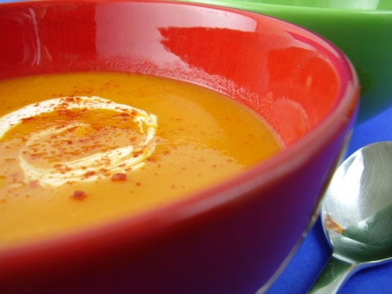
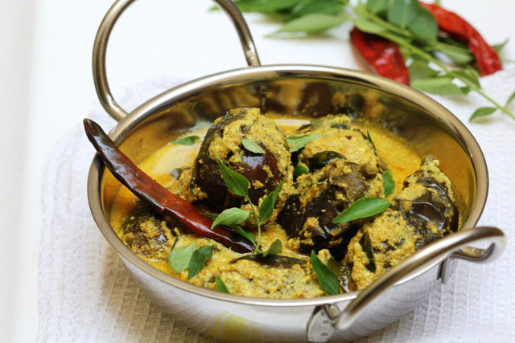

Lunch
Sweet potato soup
List of ingredients
Vegetable oil
1 diced onion
Finely chopped Ggnger
Vegan thai red curry paste
Salt
Diced sweet potato
Coconut milk
Vegan stock
Lime
Coriander
Preparation
In a large, heavy-based saucepan, heat the oil over a medium–high heat. Add the onion and ginger and cook, stirring, for about 5 minutes or until soft.
Add the curry paste and salt and cook, stirring, for a further minute or so. Add the sweet potatoes, coconut milk and stock and bring to the boil. Reduce the heat to medium and simmer, uncovered, for about 20 minutes or until the sweet potatoes are soft.
Purée the soup, either in batches in a blender or food processor or using a hand-held blender. Return the soup to the heat and bring back up to a simmer. Just before serving, stir in the lime juice.
Serve hot, garnished with coriander.
Curried eggplant with tomatoes and Basil
List of ingredients
White basmati rice
Onion
Pint cherry tomatoes
Eggplant
Salt & black pepper
Curry powder
Fresh Basil
Low fat yoghurt
Preparation
In a medium saucepan with a tight-fitting lid, combine the rice, 1½ cups water, and ½ teaspoon salt and bring to a boil. Stir the rice once, cover, and reduce heat to low. Simmer for 18 minutes. Remove from heat and let stand, covered, for 5 minutes.
Meanwhile, heat the oil in a saucepan over medium-high heat. Add the onion and cook, stirring occasionally, until softened, 4 to 6 minutes.
Stir in the tomatoes, eggplant, curry powder, 1 teaspoon salt, and ¼ teaspoon black pepper. Cook, stirring, until fragrant, about 2 minutes.
Add 2 cups water and bring to a boil. Reduce heat and simmer, partially covered, until eggplant is tender, 12 to 15 minutes.
Stir in the chickpeas and cook just until heated through, about 3 minutes.
Remove the vegetables from heat and stir in the basil. Fluff the rice with a fork. Serve the vegetables over the rice with yogurt, if using.
